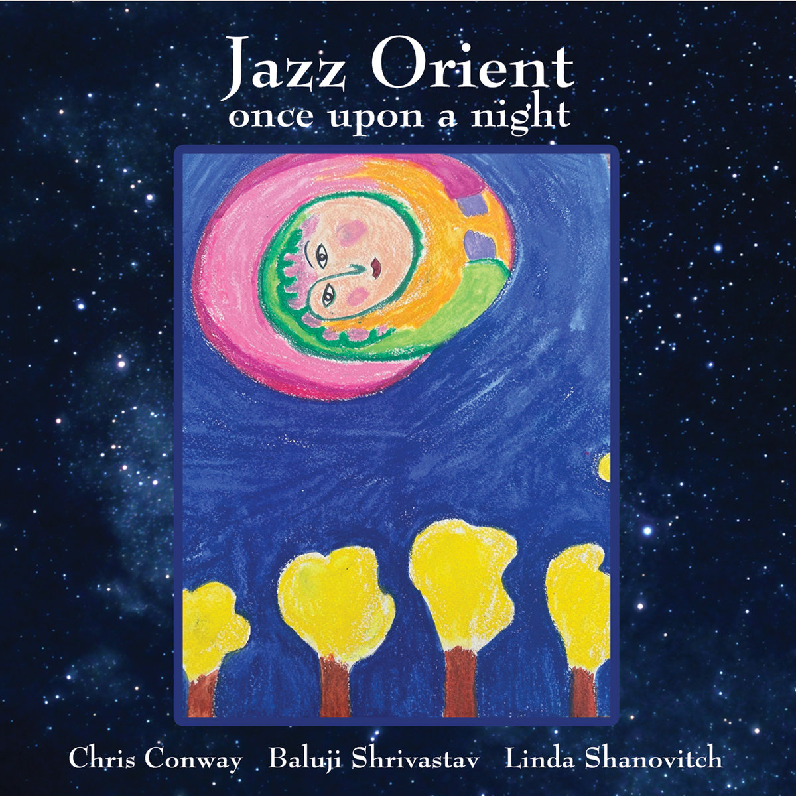

Indian classical, jazz improvisation and European folk — woven into one voice.
Since the late 1980s, Linda has recorded and performed as the vocalist of Jazz Orient — known as Re-Orient when signed to the ARC Music label — alongside sitar virtuoso Baluji Shrivastav and multi-instrumentalist Chris Conway. Together they have released seven albums and one single, drawing on Indian classical traditions, jazz improvisation and European folk.
Music to engage the mind, heart, and soul… Indian rhythms and percussion collide with jazzy improvisation.Jazzwise Magazine
Shrivastav has a way to integrate western hooks into ragas… the warmth and good humour make this album worth investigating.Global Rhythm, USA
Shanovitch's light, flexible voice floats over it all with cool insouciance.Dirty Linen, USA
Vocalist Linda Shanovitch weaves through the mix sounding like Bjork on helium.Jazzwise Magazine

Jazz Orient (aka Re-Orient) hadn't played together for ten years — busy with other projects, plus two years of the pandemic. Then one evening, by chance, they found they were all in Chris's home city of Leicester, with instruments.
They went for dinner on the Golden Mile, then on to his Aloft Studio, and improvised five tracks — no plan, no instructions. They just played. The magic was still there. The tracks are in the order they were played.
Released March 29, 2024. Chris Conway — piano, keyboards, acoustic 9-string guitar, voice, kalimba, Irish whistle, singing bowl, seed shaker, bells. Baluji Shrivastav — sitar, steel tongue drum, bodhran, voice, mouth percussion. Linda Shanovitch — voice, shaker.
Listen on BandcampLinda is also co-founder of the Baluji Music Foundation and manager of The Inner Vision Orchestra, alongside her husband Baluji Shrivastav OBE.